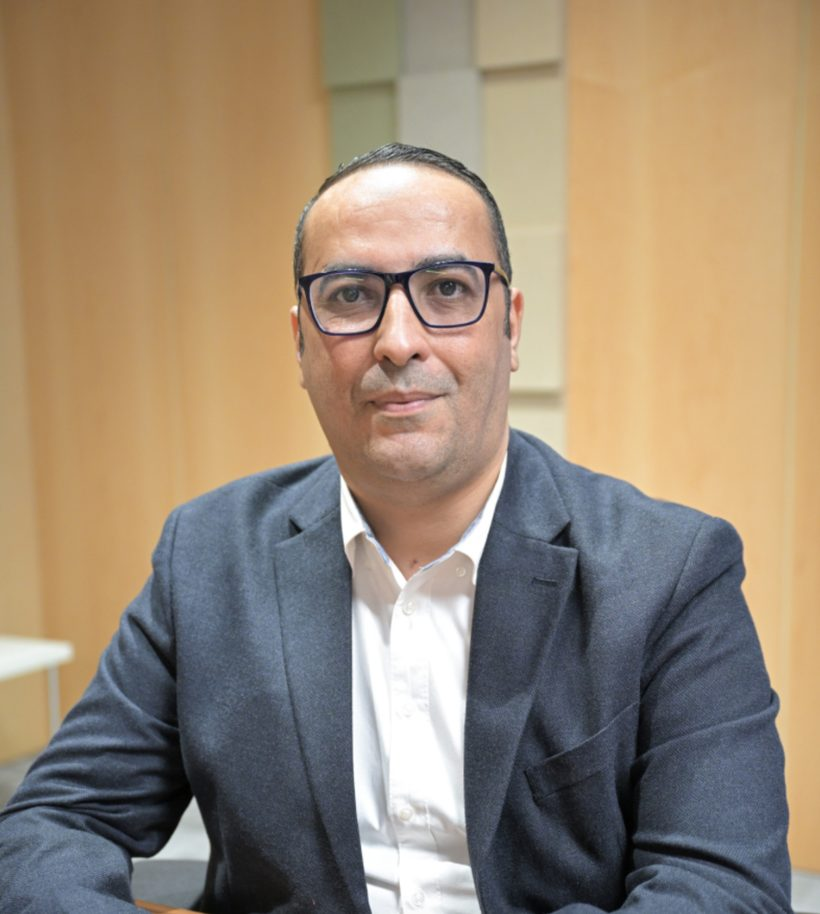

Qatar University · College of Sport Sciences
Sport as a lens on
power, identity & geopolitics
in the Arab world.
Dr. Mahfoud Amara is Associate Professor in Sport Management and Social Sciences. His work bridges global and local knowledge systems — asking who produces knowledge about sport in Arab and Muslim societies, and whose narratives are legitimised.

- Journal articles
- 26
- Book chapters
- 9
- Working languages
- 3
- Research themes
- 5
Research programme
Five intersecting themes
A qualitative-dominant programme linking micro-level narratives to macro-level structures — rejecting reductionist and Orientalist frameworks, and foregrounding locally grounded interpretation.
Selected works
Publications
A selection from a catalogue of 26 peer-reviewed articles and 9 book chapters. Filter by theme.
Recent outlets · 2025–2026
Academic service
Institution-building & international review
A foundational contributor to the College of Sport Sciences — from curriculum architecture to accreditation — alongside a sustained international service profile.
“Bridging global and local knowledge systems, combining critical theoretical insight with empirical depth to reposition sport as a key site for understanding power, identity, and geopolitical transformation in the MENA region and beyond.”
A transnational trajectory — Algeria, the UK, and the Gulf — translated into a research programme on sport, culture and geopolitical transformation.
Hover to pause · six areas of ongoing service and engagement
Collaboration, review & supervision
Open to research collaboration, doctoral examination, policy advisory and media commentary on sport in the Arab world — in English, Arabic or French.
Digital Research EcosystemORCIDGoogle ScholarResearchGateLinkedIn